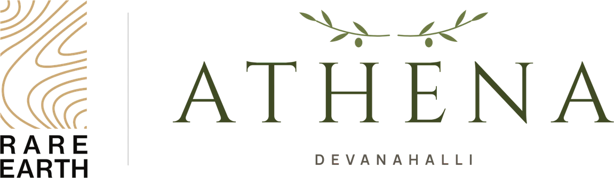

Phase I
Sy. Nos. 7/2 & 7/4Sold out80Plots
4 acres 27.5 guntas · the northern phase
- Parks944.6 & 952.7 sq m
- Civic amenity948.45 sq m
- Neighbourhood shop378.47 sq m
- CompletionDecember 2026

A RERA-registered plotted community near the KIADB Aerospace, Hardware and Tech Parks next to the airport.
Athena sits at Jonnahalli in Devanahalli Taluk, facing a district road that is being widened to 25 m. Inside, 9 m and 12 m roads end in quiet cul-de-sacs beside the parks. The plots run in clean east- and west-facing rows, with corner plots for anyone who wants a little more.
Phase II, across Sy. No. 7/3, adds 30 plots around its own park, where the natural nala is kept as a landscaped feature with a 3 m green buffer.
Phase I, the larger of the two, completes in December 2026. Phase II lies directly south of it, sharing a 12 m road, and is planned around its own park beside the natural nala.
4 acres 27.5 guntas · the northern phase
1 acre 29 guntas · directly south of Phase I
RERA registeredPRM/KA/RERA/1250/303/PR/181225/008351Verify on rera.karnataka.gov.in ↗
Both phases on one master plan: Phase I to the north, Phase II directly south across the shared 12 m road. Zoom in to read individual plots, and use the key to find the parks, the civic amenity sites and the shop. Rendered from the layout drawings; indicative.

Master plan rendered from the layout drawings · indicative. Tap the plan to open it full screen.
Two standard formats in east- and west-facing rows, plus corner and individually shaped plots of up to 2,300 sq ft. Prices are shared on request; ask us for the current price and availability of any plot.
Two parks in Phase I, and a third in Phase II where the natural nala is kept as a landscaped feature with a 3 m green buffer. Civic amenity sites in both phases and a neighbourhood shop complete the plan.
2,596.6 sq m of parks across both phases, beside quiet cul-de-sacs.
Inside Athena, 9 m and 12 m roads run between the plot rows and end in quiet cul-de-sacs beside the parks. Outside, the site fronts a district road that is being widened from 15 m to 25 m.
Athena is at Jonnahalli, east of the airport, a short drive from the Satellite Town Ring Road. The KIADB Aerospace Park, home to Boeing, Collins Aerospace and SAP Labs, is 5 to 8 km away by road, and Devanahalli town about 11 km.


Distances are approximate road distances from the site, from OpenStreetMap routing (October 2026). The airport is about 6 km away in a straight line, but the road runs round the airfield. The airport metro line is under construction and is not yet open. Names of other developments are given only to describe the area.
Jonnahalli, in Devanahalli Taluk. The site fronts a district road that is being widened from 15 m to 25 m.
These photographs are of Montira, our villa-plot community at Nandi Hills, not of Athena. They show the care we put into the land we develop: roads, planting and finish.


The master plan of both phases, drawn from the approved layout drawings. Indicative.
Athena is registered with Karnataka RERA. Verify the registration yourself, or ask us for the full document set before your visit.
Anything else you would like to know about Athena?
Athena is at Jonnahalli in Devanahalli Taluk, near the KIADB Aerospace, Hardware and Tech Parks next to the airport. The site fronts a district road that is being widened from 15 m to 25 m.
Phase I covers 4 acres 27.5 guntas on Sy. Nos. 7/2 and 7/4, with 80 plots. Phase II covers 1 acre 29 guntas on Sy. No. 7/3, with 30 plots, and lies directly south of Phase I, sharing a 12 m road. Together they make 110 plots on about 6.4 acres.
The layout drawings show 57 plots of 30 × 40 ft (1,200 sq ft), 13 plots of 30 × 50 ft (1,500 sq ft) and 39 corner and individually shaped plots of up to 2,300 sq ft, in east- and west-facing rows. These counts are taken from the drawings, which show 109 plots across both phases.
Prices for Athena are shared on request. Tell us the plot size, phase or plot number you are interested in, and we will send the current price and availability.
Yes. Athena is registered with Karnataka RERA under PRM/KA/RERA/1250/303/PR/181225/008351, which you can verify on rera.karnataka.gov.in. We can share the full document set before your visit.
Completion of Phase I is December 2026. Our team can take you through the documents and the timeline on a visit.
Phase I has two parks of 944.6 and 952.7 sq m, a civic amenity site of 948.45 sq m and a neighbourhood shop of 378.47 sq m. Phase II has a park of 699.3 sq m, where the natural nala is kept as a landscaped feature with a 3 m green buffer, and a civic amenity site of 350.22 sq m.
No. The layout plans are drawn from Athena's approved layout drawings. The photographs of Montira show our flagship community at Nandi Hills, and the airport and metro pictures are illustrative stock photographs of Bengaluru. None of them are photographs of Athena.
Viewings are by appointment. Send us a message on WhatsApp, call +91 88841 50025 or use the form on this page, and our team will host you on site.
See the land for yourself. Our team will host you on site, walk you through the layout and documents, and answer every question without any pressure.
Share a few details and our team will be in touch personally.